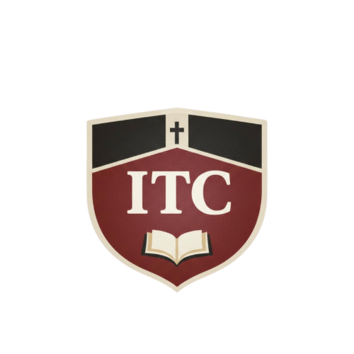
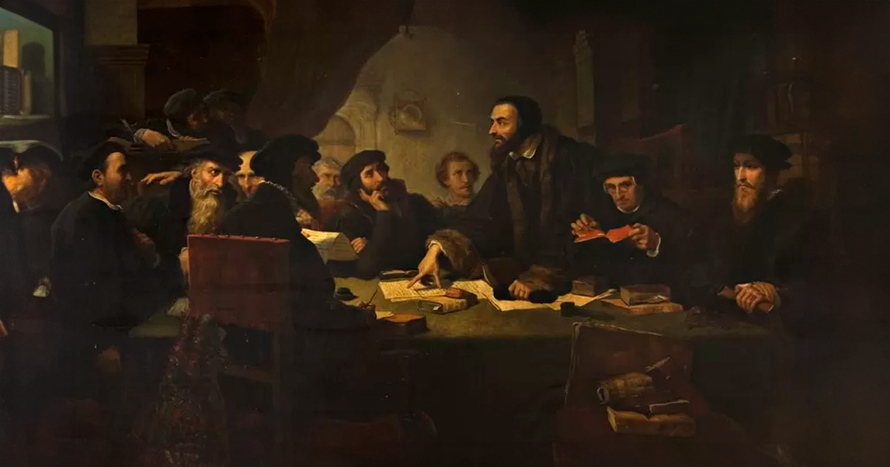

Misión
Desarrollar una formación teológica sistemática que promueva el estudio responsable de la Biblia, el análisis doctrinal y la reflexión histórica desde un marco confesional definido.

Instituto Teológico de Cuernavaca
Licenciatura en Teología en 4 años. Generación 2026–2030.
¿Por qué una licenciatura?
El programa busca formar creyentes con una comprensión sólida de la fe cristiana, capacitados para servir a la iglesia con fidelidad doctrinal y madurez espiritual.
La teología se aborda de manera ordenada, histórica y confesional, uniendo conocimiento académico con práctica ministerial.
“El conocimiento verdadero de Dios transforma la mente y gobierna la vida.”
— John Owen

Identidad académica
Desarrollar una formación teológica sistemática que promueva el estudio responsable de la Biblia, el análisis doctrinal y la reflexión histórica desde un marco confesional definido.
Servir a la iglesia, anhelando ver comunidades fortalecidas por una formación teológica sana, profunda y fiel a las Escrituras.
Temor de Dios, claridad doctrinal, disciplina académica, espíritu cristiano, comunidad fraterna e identidad confesional clara.
Qué creemos
Creemos en el Dios trino —Padre, Hijo y Espíritu Santo— revelado de manera suficiente y autoritativa en las Sagradas Escrituras. Sostenemos la salvación por gracia mediante la fe y nos situamos dentro del cristianismo histórico, en continuidad con la tradición reformada y confesional.
Plan de estudios
Espacios listos para colocar el temario oficial por año. Puedes reemplazar estos módulos con las materias definitivas.
Admisiones